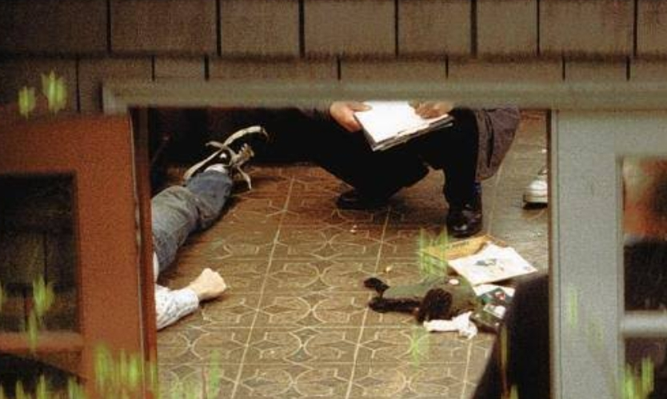

On April 5, 1994, Kurt Cobain, the frontman of Nirvana, took his own life at his home in Seattle. His body was discovered three days later, along with a suicide note addressed to his fans, friends, and his wife, Courtney Love. The note expressed his deep struggles with fame, his fading passion for music, and his feelings of isolation. Cobain had battled heroin addiction and depression for years, and despite attempts at rehab, he ultimately succumbed to his inner demons. His death sent shockwaves through the music world, marking the tragic end of a voice that had defined a generation. Even decades later, his influence and legacy remain, with many still mourning the loss of an artist who gave so much yet felt so lost.